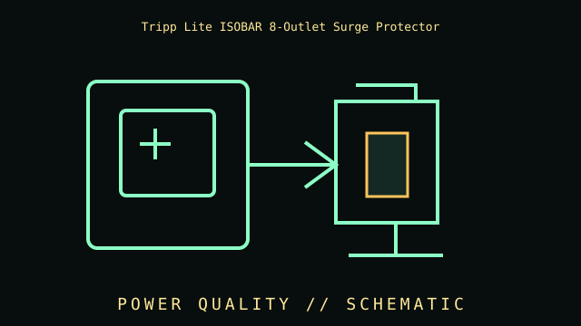

[ SURGE SUPPRESSOR // IDENTIFIED MODEL ]
Tripp Lite ISOBAR8ULTRA
Eight-outlet North American surge suppressor, 120 V / 15 A model; manufacturer listing identifies 3840 joules and a 12 ft cord. No battery backup. This record covers the specific labeled model and regional configuration, not every item in the product family.

ARCHIVAL IDENTIFICATION: Preserve the complete SKU, suffix, region, date code, manual revision, battery part (if applicable) and observed condition. Similar names do not prove equivalent hardware.
Model specifications & service record
| Subcategory | Surge protection devices |
|---|---|
| Topology / function | Surge protective strip with filtering; no inverter, voltage regulation or outage transfer. |
| VA/W ratings and outlets | Eight NEMA 5-15R outlets; 120 V, 15 A; 3840 J manufacturer-listed surge energy for ISOBAR8ULTRA. |
| Battery / replacement | No battery; not applicable. |
| Runtime and conditions | No runtime: output is lost when mains power is lost. |
| Interfaces / monitoring | Status/ground/protection indication and outlet grouping as documented in the product manual; no USB shutdown or energy-monitoring interface. |
| Safety and limitations | Surge protection requires a properly grounded receptacle and intact status indication. Do not exceed branch-circuit rating or daisy-chain. MOV protection can degrade after events; replace if its protection indicator reports failure. |
| Revision / exact identification | ISOBAR8ULTRA is the specific eight-outlet SKU; other ISOBAR8 variants may have different cord length, joule rating or outlets. Check nameplate. |
Archival and service notes
- Record the nameplate and battery label before service; keep measured behavior separate from manufacturer ratings and note load, input, temperature and test date.
- Do not open energized mains equipment. Batteries can deliver high fault current and may contain hazardous materials; follow manufacturer handling, replacement and recycling instructions.
- For preserved units, record physical damage, alarms, missing parts, battery age/swelling/leakage and substituted components. Do not energize damaged equipment.
Manufacturer sources
- Manufacturer product specifications — Tripp Lite ISOBAR8ULTRAPrimary source for the named SKU’s regional specifications and available product documentation.
- Manufacturer manual / support referenceConsult the revision matching the complete label code. Runtime estimates are manufacturer estimates at stated loads and operating conditions, not a guaranteed duration for aged batteries.